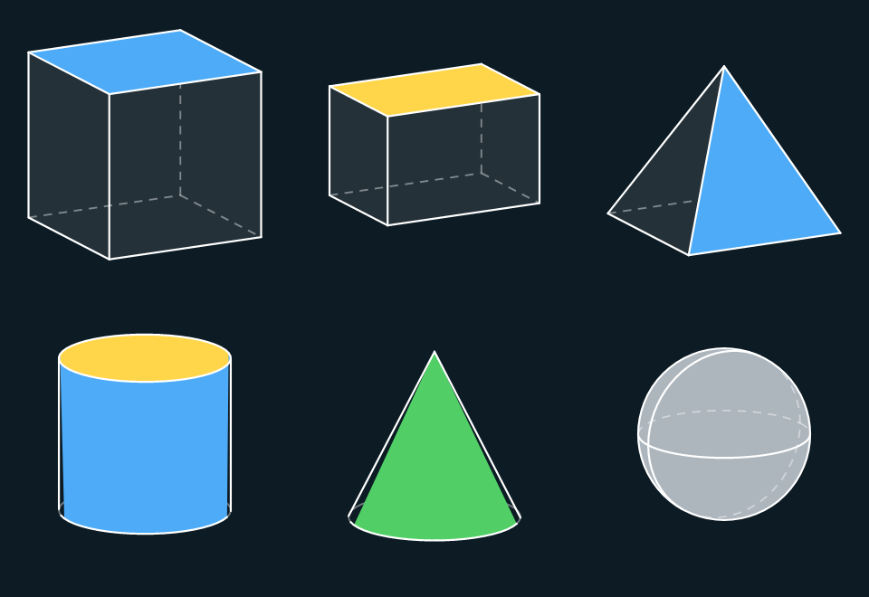
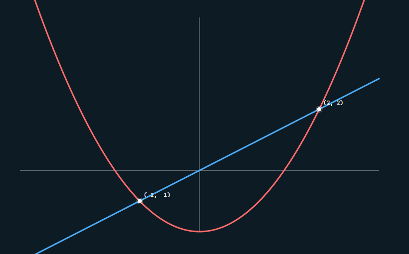

Ink Engine
笔锋不是滤镜，
是几何算出来的
采样点先做压感与笔速映射，再做半径限速和平滑，首尾按 30% 收锋；稀疏的触屏采样用向心 Catmull-Rom 曲线加密，所以一笔下去是连贯的曲线，而不是一节节直线。
压感 × 笔速
按压力与移动速度共同决定半宽，快写自然变细，慢写更饱满。
收锋与限速
相邻半径变化做斜率限制，端头渐变收锋，避免出现枣核或断口。
曲线加密
采样点之间补曲线，粗细随笔宽自适应，粗笔稀、细笔密。
Feature Gallery
不是概念图，
就是正在使用的界面
完整工具栏保持在板面下方；插入内容后可移动、旋转或等比缩放，课堂操作始终在一层内完成。

教材式三维几何
六种常用立体图形，可见棱实线、隐藏棱虚线；拖动旋转视角，对单个面填色，并可通过右下角手柄整体缩放。

多曲线与交点坐标
LaTeX 输入、多色叠加、参数滑块和函数预设；交点自动求解并标注坐标，缩放不牺牲数学精度。

手绘闭合区域填色
点击笔画围成的区域即可上色；未闭合区域不会误填，颜色始终垫在线条下方。

十色快捷板，也保留自定义色
常用颜色一触即达，末尾的加号可输入十六进制颜色；粗细滑块与实时预览放在同一栏。
In Class
从板书到资料，
不用切换软件
讲课时随手写，讲完直接分页导出；需要讲别的内容，把白板最小化到桌面继续批注。
随手板书
无限画布配合滚轮缩放、中键平移、双指捏合；点阵背景可按需开关。笔尖落下时自动屏蔽手掌与手指，手掌压在板上也不会误画。
桌面批注
最小化后保留浮动入口，点开即进入全屏透明批注层；批注工具栏同样提供画笔、荧光笔、橡皮、选择、填色、五种形状、十色与自定义色。
分页与导出
一节课多页白板，支持撤销重做；整页导出 PNG，或存成 .setb 文件下次继续。橡皮菜单可滑动清页，误操作仍能撤销。
Specification
轻，但不简陋
- 系统
- Windows 10 / 11
- 框架
- Avalonia 11 · .NET 9
- 输入
- 触控笔 / 手指 / 鼠标
- 输入通道
- Win32 WM_POINTER · WM_TOUCH 直读
- 基础工具
- 移动 · 书写 · 荧光 · 橡皮 · 选择 · 填色
- 插入
- 5 种形状 · 函数 · 6 种三维体 · 图片
- 颜色 / 粗细
- 10 色快捷板 + 自定义色 · 1–16 级
- 对象操作
- 移动 · 等比缩放 · 三维旋转 · 单面填色
- 数学功能
- LaTeX · 多曲线 · 5 类预设 · 交点坐标
- 文件 / 发布
- .setb · PNG · Windows 单文件绿色版
Open Source
开放代码，
保留创造的自由
SETBoard 仅依据 GPL-3.0 开源。你可以使用、研究、修改与分发；分发本项目或修改版本时，需要继续提供对应源码并保留版权与许可声明。许可证文件同时提供英文原文与简体中文参考译文。
Download